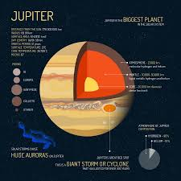

Solar System
- Sun
- The Sun accounts for 99.86% of the mass in the solar system
- Over one million Earth's could fit inside the Sun
- One day the Sun will consume the Earth
- The energy created by the Sun's core is nuclear fusion
- The Sun is almost a perfect sphere
- The Sun is travelling at 220 km per second

- Jupiter
- Jupiter Cannot Become A Star
- Jupiter Is The Fastest Spinning Planet In The Solar System
- The Clouds On Jupiter Are Only 50 km Thick
- The Great Red Spot Has Been Around For A Long Time
- Jupiter Has Rings
- Jupiter's Magnetic Field Is 14 Times Stronger Than Earth's
- Jupiter Has 67 Moons
- Jupiter Is Massive
- Jupiter Is 2.5 times the mass of all the planets of the Solar System combined
- Earth
- We're the third rock from the sun
- Earth is a squashed sphere
- The hottest spot is in Libya
- Earth is not flat, but it's not perfectly round either
- The days are getting longer
- There weren't always several continents
- Earth's gravity isn't uniform
- In the past, sea levels were very different
- The moon is not Earth's only companion
Solar System | Sun | Ender Reaper 9000 | Copyright© Ankush 2021